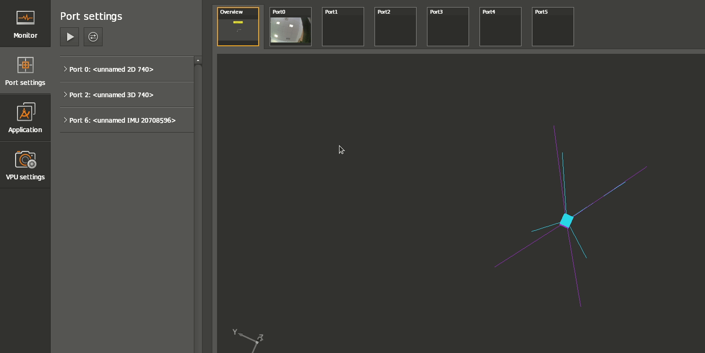

Changing parameters
Every port parameter can be set manually with the ifmVisionAssistant - under Port settings menu. E.g. the switch from CONF to RUN state.

Short parameter overview
This documentation does not include the description of every parameter, but rather focus on the general approach to change a parameter. For a list of settings, parameters, etc please check the documentation here
Every port menu includes its own configuration / parameters. These parameters can be changed manually via the ifmVisionAssistant. The ifmVisionAssistant is however not considered as the main configuration tool. This role is fulfilled by the ifm3d-library.
The ifmVisionAssistant is a tool to verify the overall system and experience certain changes live.
The parameters subgroups are automatically split equivalently to the config.json / parameter JSON schema - see ifm3d-library. This means that the configuration of parameters in the ifmVisionAssistant is always up-to-date with the available parameters via the JSON parameter structure.
Symbol |
Parameters |
Description |
|---|---|---|
General port parameter |
General settings like mode, state |
|
acquisition |
Imager configuration related parameters like exposure time |
|
data |
Information about the transferred data |
|
info |
Information about the connected hardware like hardware production state. |
|
processing |
Parameters for post processing data. Like extrinsic calibration |
After changing a parameter, the ifmVisionAssistant will not save the configuration.
Note: The calibrated IMU (Interial Measurement Unit) system provides parameters at Port 6. Port 6 represents the IMU.